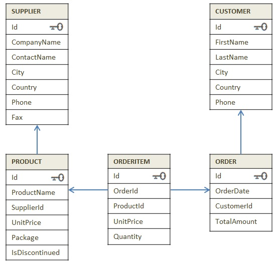
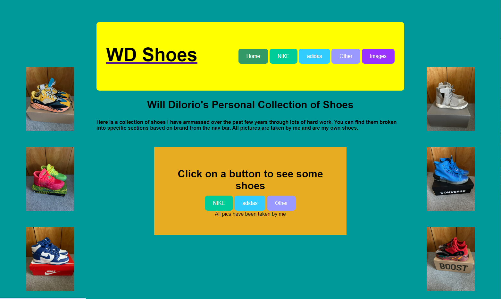

LEGO Database

Picture 1: Example image of a database designed in Oracle SQL. Not the actual LEGO collection database.
A small database created in Oracle SQL that contained a handful of my personal collection of LEGO building sets. Through different commands, various attributes could be filtered and sorted, such as the set name, original price, set number, as well as if a set was currently in storage or on display.
Shoe Collection Webpage

Picture 2: Screenshot of the self-developed shoe collection website. Showcases CSS styling such as implemented color themes, layouting, as well as formatting and clickable buttons.
A website I created to showcase my personal collection of shoes. This included basic web design, along with knowledge of HTML and webpage styling. The challenge with this assignment was creating a theme for the website that was not only original but was acceptable through the Fair Use guidelines.
You can view the original files
here.